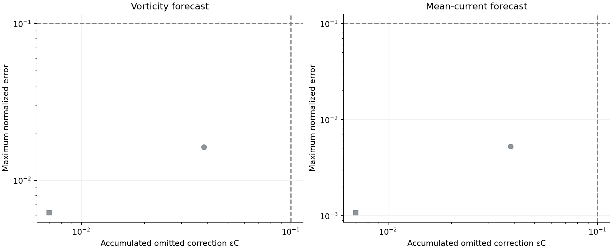
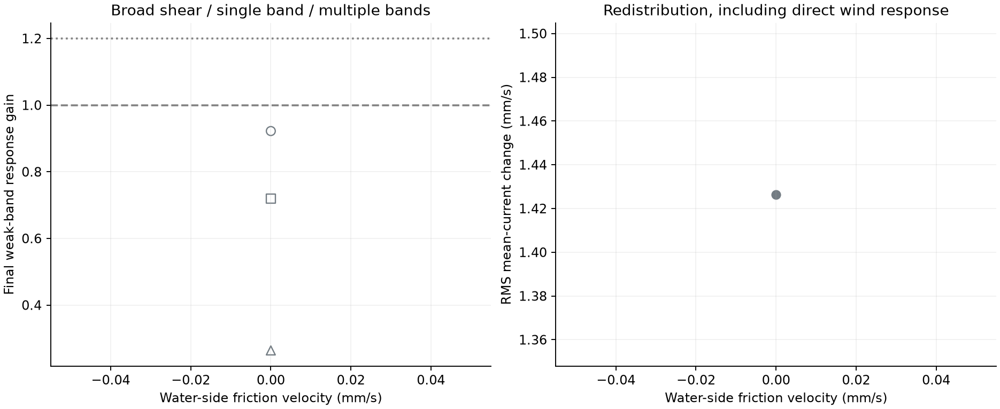

Sustained wind forcing · preregistered tests
When does the mean evolve autonomously—and when do bands grow?
Surface stress continually supplies momentum while the Stokes profile affects flow organization. These experiments test the reduced mean-vorticity equation separately from the formation of depth-banded currents. Small three-dimensional feedback with no jets is consistent with a necessary, rather than sufficient, applicability argument.
What counts as a pass?
Mean closure: integrate the RMS native omitted tendency over a 200 s window, normalized by the starting x-dependent vorticity. Restart a 2D forecast from the actual transverse mean. A pass requires εC ≤ 0.1 and maximum normalized vorticity and current errors ≤ 0.1 in both prescribed interior regions. The 0.05 and 0.2 alternatives are retained in the downloads.
Band response: compare opposite-sign weak current perturbations at three vertical wavelengths. Positive candidates require amplification, reinforcing turbulent momentum transport and a closed tendency budget. Amplitude, independent-seed, spatial and timestep checks qualify a supported response. Mode 1 tests broad shear; only modes 2 and 4 test interior bands.
Scope: wind forcing and dissipation remain in every reduced forecast. This is not a test of unforced global vorticity conservation, and a nonzero wind-driven current is not automatically a jet.
Full protocol · Exact criteria · Simulation matrix · All results · Provenance


Simulation bundles
| Case | Status | Closure at 600 / 1000 s |
|---|---|---|
| wind-u000-a075-s1 | complete | INCONCLUSIVE / PASS |
| wind-u002-a075-s1 | running | Awaiting verified results |
| wind-u004-a075-s1 | running | Awaiting verified results |
| wind-u008-a075-s1 | queued | Awaiting verified results |
| wind-u000-a075-s2 | queued | Awaiting verified results |
| wind-u002-a075-s2 | queued | Awaiting verified results |
| wind-u004-a075-s2 | queued | Awaiting verified results |
| wind-u008-a075-s2 | queued | Awaiting verified results |
| wind-u004-a050-s1 | queued | Awaiting verified results |
| wind-u004-a100-s1 | queued | Awaiting verified results |
| nowaves-u004-a075-s1 | queued | Awaiting verified results |
| nowaves-u004-a075-s2 | queued | Awaiting verified results |
| weakwaves-u004-a075-s1 | queued | Awaiting verified results |
| weak3d-u000-a075-s1 | queued | Awaiting verified results |
| weak3d-u002-a075-s1 | queued | Awaiting verified results |
| fine-u004-a075-s1 | queued | Awaiting verified results |
| fine-u008-a075-s1 | queued | Awaiting verified results |
| halfdt-u004-a075-s1 | queued | Awaiting verified results |
| halfamp-u004-a075-s1 | queued | Awaiting verified results |
| exact2d-u004-a075-s1 | queued | Awaiting verified results |
What can we conclude?
1 forecast windows support the reduced mean dynamics; 0 have a numerically checked failure; 1 remain inconclusive or outside the small-correction regime.
0 case/mode combinations have a positive response supported by the specified amplitude, independent-seed, spatial and timestep checks.
The broader mechanism remains unassessed: these measurements do not independently establish vortex-wave dispersion or inverse energy transfer. A small correction without a growing band does not fail the necessary applicability argument. A failed numerical job is a computational failure, not a physical falsification.